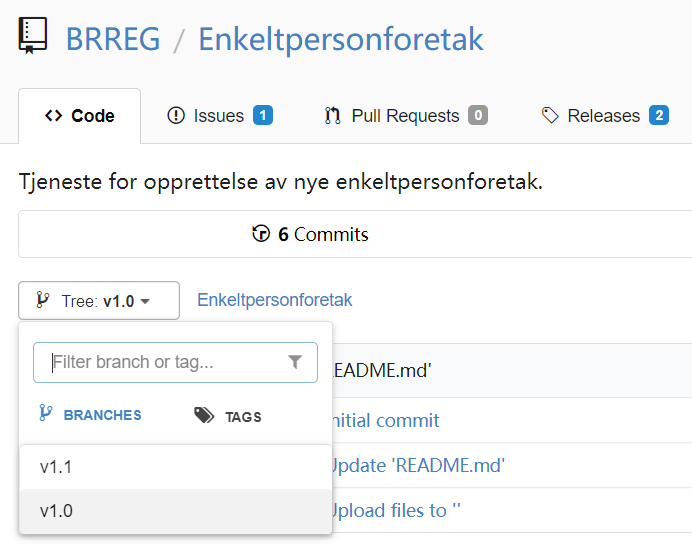

Functionality in Repos
Funksjonalitet for lagring og versjonering av tjenester i Git-repositories samt funksjonalitet for application lifecycle management.
On this page:
{kind=link}
Eksempel-repository for tjenesten "Starte Enkeltpersonforetak"
“Altinn Repositories” er en frittstående Git versjonskontroll og Application Lifecycle Management-løsning, som både Designer, kodeeditorer og andre eksterne verktøy vil benytte som back-end og felles sted for å lagre og versjonere tjenestene som utvikles.
Repositories har et GitHub-lignende brukergrensesnitt og både Git og REST-baserte tekniske grensesnitt.
{kind=link}
Git muliggjør at flere verktøy kan jobbe mot samme tjeneste-repository
Det vil være en omfattende jobb å forsøke å utvikle en Git + ALM løsning på egen hånd, ref. all funksjonaliteten som behøves.
Heldigvis finnes det flere open source “GitHub-kloner” som vi kan benytte, og blant dem virker Gitea å være mest lovende (uttales som /ɡɪ’ti:/ - “gitty”). Bilder fra Gitea benyttes som eksempler videre i denne dokumentasjonen.
Funksjonalitet i “Repositories”
Repositories inneholder et repository med versjonerte filer for hver 3.0-tjeneste. Eksempel på typer filer som en “3.0-tjeneste” vil kunne bestå av er kode, tester, web-komponenter, layouts og stiler, oversettinger, arbeidsflyt og konfigurasjon.
Repositories vil tilby funksjonalitet rundt den enkelte 3.0-tjeneste, og eksponere funksjonaliteten via både brukergrensesnitt og et REST-API som er en klone av GitHub sitt v3 API-format. Dette er positivt da det finnes andre verktøy som også støtter dette API-formatet, og da det kan forenkle det å kunne erstatte Gitea som back-end med andre liknende Git-systemer.
3.0 Tjeneste
Repository som representerer en “3.0-tjeneste”, aka app, og inneholder alle filer som tjenesten består av.
Hver utgave av en tjeneste vil leve i sin egen mappe, slik at ett repository kan inneholde èn eller flere utgaver av den samme tjenesten.
Repository management
Håndtering av repositories er en kjerneaktivitet, da hver tjeneste som utvikles vil lagres i sitt eget repository.
- Create/delete repository
- Link to repository
- Rename repository
- Fork repository
- Muliggjør at man kan ha et “master”-repository med felles tjenester som flere andre kan benytte, slik som dagens “master-tjenester” bare mye kraftigere
- Muliggjør også at utviklere kan lage som egen kopi og teste ut nye muligheter og løsninger på sitt eget område uten å påvirke originalen
- List repositories
- Download/upload files
- Download repo
- Create files and folders
- Read/edit files
- Rename files
- Delete files
- View raw file
- Link to file

Opprette et nytt repository
{kind=link}
Enkelt å opprett fork

Ny fork av en tjeneste
Dokumentering
Det er viktig å ha god støtte for å dokumentere tjenestene man utvikler, slik at det vil være enkelt for andre personer på teamet å bidra. Det er derfor ønskelig å ha innebygd Wiki-funksjonalitet med støtte for å editere i markdown, slik som i Altinn docs og AltinnPedia.
- Wiki
- Add/edit/delete pages
- Markdown editing
- Link to specific wiki page
- Support for other external wikis
- Emojis
- Markdown editing
- Preview
- Fullscreen
- Side-by-side

Wiki
Versjonering
Hver eneste fil som en 3.0-tjeneste består av skal ha full versjonshistorikk, uavhengig av om man jobber mot filene via Designer eller eksternt og distribuert/lokalt i en kodeeditor på egen maskin. Repositories sitt versjonskontrollsystem, som er basert på Git, er laget nettopp med tanke på dette.
- Version history of all files, artifacts, code and configuration
- Link to each change with a unique id
- Link to each changed file
- Link to who did the change
- Highlight the last change done in the repository
- Time of change
- Comments/messages
- Diff between versions
{kind=link}
Versjonshistorikk for hver eneste fil

Diff for hver eneste fil i nettleser

En utvikler kan se samme diff og versjonshistorikk lokalt i sin egen editor
Release management
En svært viktig egenskap når man utvikler programvare (noe som 3.0-tjenester er) er å kunne tagge ulike versjoner, og kunne gå tilbake og teste eller patche en tidligere versjon hvis man ønsker det. Det er også viktig å kunne se alt som har endret seg mellom versjonene.
Siden Git benyttes for versjonering, så vil en release/tag som opprettes peke på en eksakt versjon av hver eneste fil som en 3.0-tjeneste består av, og man kan enkelt se hva som er endret.
- Create tags for the 3.0 app
- Link to tags
- Create/delete releases
- Link to releases
- Marking of pre-releases
- Time of release creation
- User that triggered the release
- Download zipped files of release
- Browse content of a given tag/release
{kind=link}
Releases som er opprettet for en 3.0-tjeneste

QA
En QA-prosess for godkjenning av endringer basert på branching og pull requests, vil for større teams kunne være mulig. Dette er i tråd med hvordan programvare utvikles, inkludert selve Altinn.
Backlog management
Som for all annen programvareutvikling, så vil hver 3.0-tjeneste typisk ha en egen backlog med bugs, forbedringer, fremtidige features, etc. som tjenesteutviklerne vil jobbe mot. Dette er en sentral del av Application Lifecycle Management.
- Create/close issues pr. 3.0 app
- Time of creation
- Who
- Filter issues by open/closed
- Add labels
- Filter issues by label
- Assign to milestone
- Filter issues by milestone
- Assign to user
- Filter issues by assignee
- Markdown editing
- Discussions
- Add files to issue
- Notifications when issues change
- Issues search
- List issues

Backlog med issues

Issue eksempel
{kind=link}
Milepæler er en fin måte å sette scope for fremtidige releaser, og se fremgang

Labels gjør det enkelt å kategorisere og filtrere issues
Org management
Organisasjoner er tjenesteeiere, men i 3.0 er det ikke noe i veien for at brukere også kan utvikle tjenester.
I en organisasjon så kan man gi tilganger til brukere, og man kan opprette teams med tilgang til en eller flere 3.0-tjenester.
Det å håndtere organisasjonen, som alt annet, skal være 100% selvbetjent.
- Create/delete organisations
- Name/shortname
- URL
- Logo
- List organisations
- Link to organisation
- Create repository for organisation ref. repository management
- Add/remove teams in organisation
- List teams in organisation
- Add/remove users in organisation
- List all users in organisation
- Add/remove users in teams
- List users in teams

Liste over organisasjoner
{kind=link}
Repositories tildelt team ENK
{kind=link}
Innstillinger for team ENK
Brukerstyring
Brukerne i denne sammenheng er tjenesteutvklerne. Det å håndtere organisasjonen skal være helt selvbetjent.
- Add/remove users
- Name
- Avatar
- Add/remove users to/from teams
- “Starring” of favorite repositories
- List of user repositories (including forks)
- Activity log for user
- Workspace for user (dette er veldig viktig, betyr at tjenesteutviklere kan “leke seg” på sitt eget område)
I første omgang (MVP) vil tjenesteeier (org-admin) legge til alle sine brukere i gruppen “owner” slik at de får tilgang til å opprette repositories (tjenester). Gruppen “owner” gir vide fullmakter på organisasjonsnivå (dvs tjenesteeiernivå), så på sikt vil det implementeres mer granulert tilgangsstyring.

En ny tjenesteutvikler har fått skrivetilgang

Tjenesteutviklere har egen profil og aktivitetslogg
Søke
Søk er viktig for å finne frem, og skal være bygd inn i løsningen.
- Repositories
- Issues
- Edits
- Users
- Organisations
{kind=link}
Søk med sortering
Tilgangsstyring
Det skal være mulig å styre tilgang til repositories, les/skriv/admin, teams, brukere, samt opprette private repos.
- Access to 3.0 apps (read/write)
- Access to orgs
- Users access
- Private/public app-repos
- Administrator
- AM/AD-integration
- API access

Gitea tilbyr API med swagger
Trigge hendelser
I dagens hverdag, med bruk av Slack og andre systemer ifbm. utvikling, så er det viktig at “Repositories” kan trigge hendelser i andre systemer, f.eks. poste til en Slack-kanal når en endring skjer i en 3.0-tjeneste.
- Trigger events at org-level
- Trigger events at 3.0 app-level

WebHook mot Slack
Logge inn
Tjenesteutviklere og andre interessenter skal kunne logge inn og få tilgang til organisasjoner og 3.0-tjenester.
- Login page
- CAPTCHA?
- Forgot password?
- 2-factor auth
- External authentication
{kind=link}
Login
Sende varslinger
- Send notifications to users based on events or mentions
- User can control the notifications to receive
- Users can follow other users and subscripe to issues